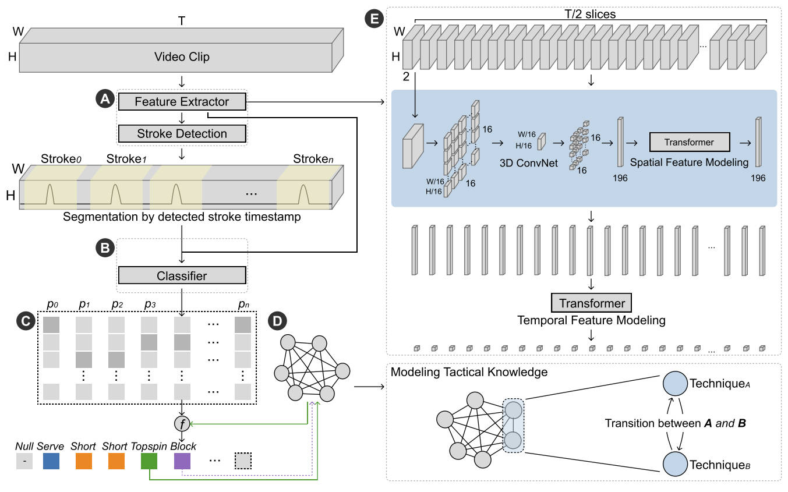

About
News
- One paper accepted by AAAI 2024, and presented at National College Student Innovation Conference (one of top 5 projects selected from Zhejiang University)
- Awarded ZJU Top 10 Outstanding Students Award, the highest honor at Zhejiang University (10/~65,000)
- Awarded Chu Kochen Presidential Scholarship, the highest scholarship at Zhejiang University (24/~65,000)
- Awarded my 3rd National Scholarship by Ministry of Education (Top 0.2%)
- One patent submitted
- Awarded SenseTime Scholarship, a research scholarship selecting 30 undergrads in China
- One work receives People's Choice Award in ACM MobileHCI
- One paper accepted by IEEE VIS 2021 and TVCG
Publications and Manuscripts

SinLayout: Learning Generative 3D Scene Layouts from a Single Image
TLDR; Disentangling zero-shot image-to-3D scene generation by uncovering 3D scene layout distributions from a single image
Manuscript

StrokeNet: Tactical Analysis in Knowledge-Intensive Racket Sports through Video Modeling
TLDR; Understanding sport techniques from broadcast video by jointly leveraging sparse visual information and contextual knowledge
AAAI 2024

TIVEE: Visual Exploration and Explanation of Badminton Tactics in Immersive Visualizations
TLDR; 3D visualization and VR interaction for immersive sports analysis
IEEE TVCG (VIS 2021)
Selected Honors & Awards
- ZJU Top 10 Outstanding Students Award, 2023
- Highest honor at Zhejiang University, awarded to 10/~65,000 students
- Chu Kochen Presidential Scholarship, 2023
- Highest scholarship at Zhejiang University, awarded to 24/~65,000 students
- Chinese National Scholarship, 2021, 2022, 2023
- Awarded by Ministry of Education of China, Top 0.2%, 3 consecutive times
- SenseTime Scholarship, 2022
- Awarded to 30 students in China for research
- ACM MobileHCI People's Choice Award, 2022
- Awarded to 4 global hackathon projects
- Chinese National First-Class Athlete, 2018
- Highest honor for semi-professional athletes, awarded by General Administration of Sport of China
Experiences
Research Project Lead @ ZJU
National Undergraduate Innovation Project
IDG, State Key Lab of CAD & CG
Work on video action understanding and sports data mining
1 paper accepted by AAAI 2024 (co-first author)
1 patent submitted (student first author)
Recognized by experts from Chinese table tennis team
Top 5 project in ZJU selected for National Innovation Conference
IDG, State Key Lab of CAD & CG
Work on video action understanding and sports data mining
1 paper accepted by AAAI 2024 (co-first author)
1 patent submitted (student first author)
Recognized by experts from Chinese table tennis team
Top 5 project in ZJU selected for National Innovation Conference
Supervisor: Prof. Yingcai Wu
Summer Workshop @ NUS
School of Computing, National University of Singapore
Received A+ in Visual Computing course with a project award
Received A+ in Visual Computing course with a project award
Reserach Assistant @ ZJU
IDG, State Key Lab of CAD & CG
Project on immersive visualization and VR interaction for sports
1 paper accepted to IEEE VIS and TVCG
Project on immersive visualization and VR interaction for sports
1 paper accepted to IEEE VIS and TVCG
Supervisor: Prof. Yingcai Wu
Teaching
Teaching Assistant, Zhejiang University- ZJU 21191070: Computer Vision, with Professor Mingli Song (2023)
- ZJU 211G0280: Fundamentals of C Programming, Chu Kochen Honors College (2022)

Top